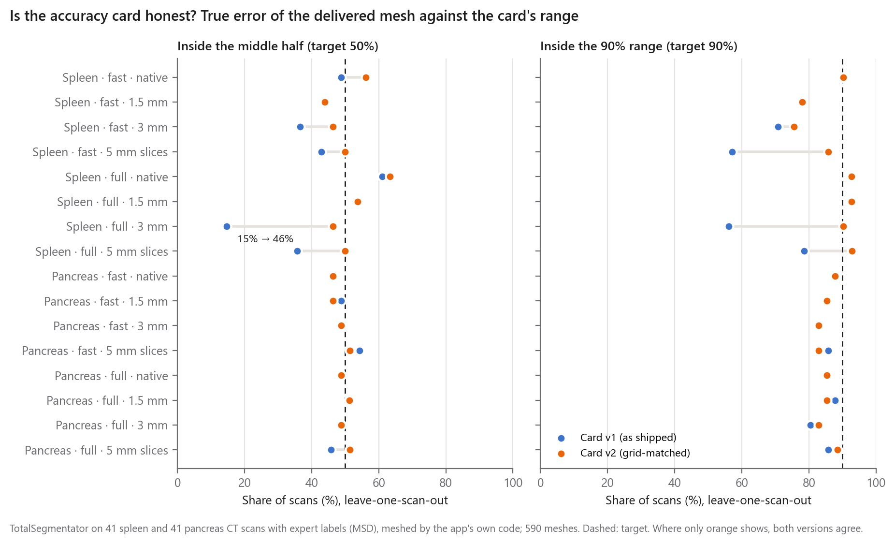
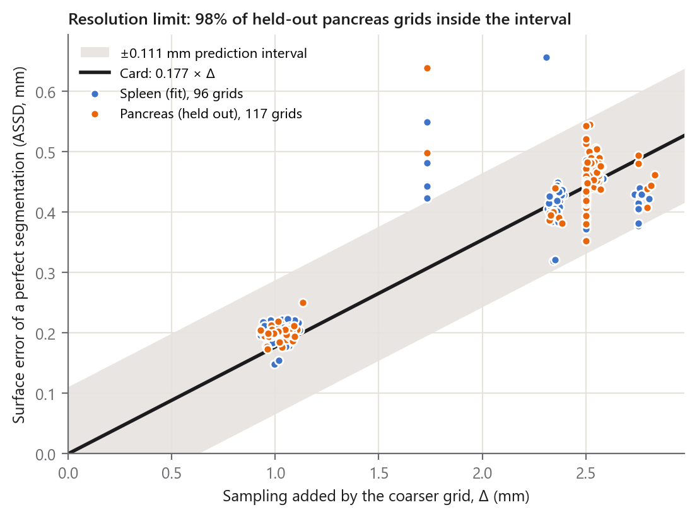
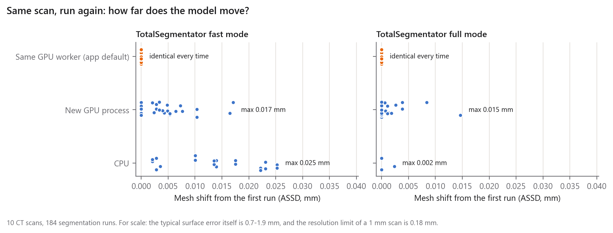

Is the accuracy estimate honest, and is the model repeatable?
20 October 2026 · Sameer Morya and Sarthak Wage, K J Somaiya School of Engineering, Mumbai · Validation tests 1 and 2
MEDSYS shows an accuracy estimate next to every 3D model it builds. The research paper measured how accurate the models are; these two tests ask the next questions. Test 1 checks whether the estimate the app shows matches each model's true error. Test 2 checks whether the same scan always gives the same model. Both run the application's own code, not research copies of it.
Findings
Three of the card's four lines held on 590 meshes from 82 CT scans with expert outlines:
The resolution limit held for 98% of grids on the pancreas, an organ held out of its fit.
The true error was at least that limit for 100% of meshes.
The smoothing shift matched the true change within 0.022 mm (median).
The watertight flag agreed with an independent check on 590 of 590 meshes.
The segmentation line was overconfident on coarse scans. It was right at the scans' own resolution, but on 3 mm grids in full mode only 15% of spleen scans fell in its "middle half" (target 50%).
The fix: the card now uses the measurement made at the resolution closest to the scan, and shows a 9-in-10 range. Re-tested leave-one-scan-out on the same meshes:
50% fall in the middle half (target 50%) and 86% in the 9-in-10 range (target 90%).
The worst cell rose from 15% to 46%.
On the app's GPU worker, the same scan gave the same segmentation every time. Zero voxels changed in 80 repeated runs on 10 scans.
A new process or the CPU changed at most 96 voxels of the organ. That moved the model by at most 0.025 mm, about 15% of the spread of the error between scans of the spleen.
Meshing is deterministic. The same segmentation gave an identical mesh and identical card values for 590 of 590 meshes.
1. Where these tests fit
Validation of a digital health tool is usually split into four parts:
Verification: does the software do the same thing every time? That is test 2.
Analytical validation: is the output close to the truth? The paper measured this on exact digital phantoms and on 82 CT scans outlined by experts (41 spleen, 41 pancreas; Medical Segmentation Decathlon).
Calibration: is the accuracy the app shows honest? That is test 1.
Physical and clinical validation: printed phantoms in a real scanner, agreement with experts, use by surgeons. This is not yet done (Section 5).
2. Test 1: the accuracy card
Method
The app's build_mesh call meshed the TotalSegmentator segmentations of all 82 scans, with the accuracy estimate switched on:
both engine modes (fast, at 3 mm; full, at 1.5 mm);
four grids: the scan's own resolution, 1.5 mm, 3 mm, and 5 mm slices;
590 meshes in total.
Each mesh's true error is its average surface distance (ASSD) to the expert's outline, from 20,000 points per side. Each line of the card was compared with that error as follows:
Segmentation line: checked leave-one-scan-out. The card's reference figures are rebuilt from the other 40 scans, so no scan is judged against figures that include itself. Its "middle half" should hold about half the scans, and its 9-in-10 range about nine in ten.
Watertight flag: compared with VTK's own classification of open and non-manifold edges.
Card line
How it was checked
Result
Resolution limit
Expert outline coarsened to each grid; predicted 0.177 × added sampling. Pancreas held out of the fit
pancreas 98% inside ±0.111 mm (mean miss 0.029 mm, 117 grids); spleen 95%
Resolution range
Exact phantom surfaces (the data the range comes from)
88% inside 0.13–0.21 × spacing (was 60% with 0.14)
"Expect at least the resolution limit"
True error of every delivered mesh
100% of 590
Smoothing & simplification
Card's measured shift against the change smoothing actually caused in the true error
signed shift within 0.022 mm (median; 95th pct 0.120); change within the shift for 97%
Watertight
Independent VTK edge check
590 of 590 agree
Segmentation
Leave one scan out; table below and Figure 1
v2: 50% middle half, 86% 9-in-10 range
What the test found
The card as first shipped (v1) used the error measured at the scans' own resolution everywhere, adding the paper's thick-slice change on 5 mm grids:
At native resolution it was well calibrated.
On coarse grids the true error was larger than the card implied, most of all for full mode on 3 mm grids: only 15% of spleen scans fell in its middle half.
Overall, v1 held 46% in the middle half and 82% in a 9-in-10 range. 35% of meshes were worse than its middle half.
The corrected card (v2, now in accuracy.py):
It uses the reference measured on the study grid closest to the scan's spacing, and shows the 9-in-10 range as well as the middle half.
On the same meshes it holds 50% and 86%, with 31% worse than the middle half.
Against the segmentation alone, which is the line's exact claim, v2 holds 48% and 86%.
A 9-in-10 range drawn from 40 scans is expected to cover a new scan slightly less than 90% of the time, so 86% is about what an honest range gives.
The phantoms showed one more problem. The resolution range's lower bound, 0.14 × spacing, sat at the median error of isotropic grids, so about half of them fell just below it. The bound is now 0.13, the phantoms' 2.5th percentile.

Figure 1. Share of scans whose true error fell inside the card's middle half (left) and 9-in-10 range (right), before (blue) and after (orange) the fix, leave one scan out.
Organ
Mode
Grid
v1 middle half
v2 middle half
v1 9-in-10
v2 9-in-10
spleen
fast
native
49%
56%
90%
90%
spleen
fast
1.5 mm
44%
44%
78%
78%
spleen
fast
3 mm
37%
46%
71%
76%
spleen
fast
5 mm slices
43%
50%
57%
86%
spleen
full
native
61%
63%
93%
93%
spleen
full
1.5 mm
54%
54%
93%
93%
spleen
full
3 mm
15%
46%
56%
90%
spleen
full
5 mm slices
36%
50%
79%
93%
pancreas
fast
native
46%
46%
88%
88%
pancreas
fast
1.5 mm
49%
46%
85%
85%
pancreas
fast
3 mm
49%
49%
83%
83%
pancreas
fast
5 mm slices
54%
51%
86%
83%
pancreas
full
native
49%
49%
85%
85%
pancreas
full
1.5 mm
51%
51%
88%
85%
pancreas
full
3 mm
49%
49%
80%
83%
pancreas
full
5 mm slices
46%
51%
86%
89%
Targets: 50% and 90%. Highlighted: the worst cell before the fix. Scans already as coarse as a grid are counted once, at their own resolution.

Figure 2. Surface error of a perfect segmentation (the expert outline, coarsened) against the sampling the coarser grid adds. Line: the card's 0.177 × Δ; band: its ±0.111 mm interval. Orange: the pancreas, never used in the fit.
Limits of this test
Same scans as the references: the card's references come from these 82 scans. Leave-one-scan-out keeps each scan out of its own reference, but new scanners or hospitals may differ.
Two organs only: only the spleen and pancreas have expert outlines here. Every other structure shows "not validated" in the app, which is correct: the spleen's 9-in-10 range would have covered only 5% of pancreas meshes.
3. Test 2: repeatability
Method
10 scans (5 spleen, 5 pancreas, drawn with seed 2026) went through TotalSegmentator repeatedly, in both modes, along three paths:
The app's persistent GPU worker: 5 runs per scan, in one warm process.
A new GPU process each run: 3 runs per scan. nnU-Net autotunes its GPU kernels per process, so kernels can differ.
The CPU: 2 runs per scan in fast mode, and on 2 scans in full mode.
That is 184 runs on an NVIDIA GeForce RTX 5080. Each run was compared voxel by voxel with the first worker run. The organ was meshed with the app's call, and the mesh was compared with the first run's mesh and with the expert's outline.
Mode
Path
Runs
Organ voxels changed (max)
Organ Dice (min)
Mesh shift (max, mm)
Change in true error (max, mm)
Seconds per scan
fast
Persistent GPU worker (app default)
40
0
1.0000
0.000
0.000
6
fast
New GPU process each run
30
96
0.9993
0.017
0.014
30
fast
CPU
20
96
0.9990
0.025
0.014
34
full
Persistent GPU worker (app default)
40
0
1.0000
0.000
0.000
18
full
New GPU process each run
30
16
0.9996
0.015
0.011
76
full
CPU
4
4
1.0000
0.002
0.006
175
Runs exclude the first worker run, which is the reference. Change in true error is the largest range of the ASSD against the expert outline across repeats of one scan.

Figure 3. Mesh shift of every repeated run from the first run of the same scan.
What it shows
The worker is exactly repeatable. The app's default path gave bit-identical segmentations in all 80 repeats. That is where users' results come from.
Other paths change a few voxels. A new process, or the CPU, changes at most 96 voxels of the organ: different kernel choices and floating-point order flip voxels that sit on the decision boundary.
That change is tiny next to the error. The model moves by at most 0.025 mm and its true error by at most 0.014 mm. The spread of that error between scans is 0.17 mm (spleen) and 1.08 mm (pancreas, interquartile range).
Meshing adds no variation. Rebuilding a mesh from the same segmentation gave identical vertices, faces and card values for 590 of 590 meshes (checked in test 1).
The repeatability run's own rebuild check had a bug, now fixed: it compared the card's blank volume change (left blank for open meshes) as unequal to itself, so it flagged exactly the 29 open meshes and no others. The meshes themselves were identical. The rebuild count above comes from test 1, which checks every mesh.
4. Changes to the application
Reference by grid: the segmentation line uses the reference measured on the study grid closest to the scan (accuracy.reference_level; native, 1.5 mm, 3 mm or 5 mm slices). It shows the median, the middle half and the 9-in-10 range.
Resolution range: now 0.13–0.21 × RMS voxel spacing (was 0.14–0.21).
No stale figures: the resolution limit is recomputed from the current constants whenever a dataset is opened, so older results never show outdated figures.
Tests: the automated tests cover the new reference choice. All 115 tests pass.
5. Still to do
A real object in a real scanner: 3D-print shapes of known size, scan them at 0.6–5 mm slices, compare with the CAD file. Needs CT scanner time.
More organs and hospitals: liver, kidneys, bone and MRI from multi-centre public data (for example AMOS), checked for overlap with the engine's training data. Needs GPU time only.
Agreement with experts: two or three people outline the same scans, to see whether MEDSYS is as close to an expert as experts are to each other. Needs radiologist time.
Reader study: surgeons rate the models and time their use. Needs ethics approval.
As for the held-out pancreas in the paper, each test's pass and fail thresholds will be written down before it runs.
Reproduction
python -m research.card_validation --workers 8 # test 1, ~4 min, needs the Tier 2 engine cache
python -m research.repeatability # test 2, ~2 h on one GPU
python -m research.validation_figures research/results/validation_card_20261020-203227 \
research/results/validation_repeatability_20261020-182532
Runs reported here: research/results/validation_card_20261020-203227 and research/results/validation_repeatability_20261020-182532. Each has results.csv.gz, run.json and summary.md. The Tier 2 data is the Medical Segmentation Decathlon (CC-BY-SA 4.0). MEDSYS is not a medical device.